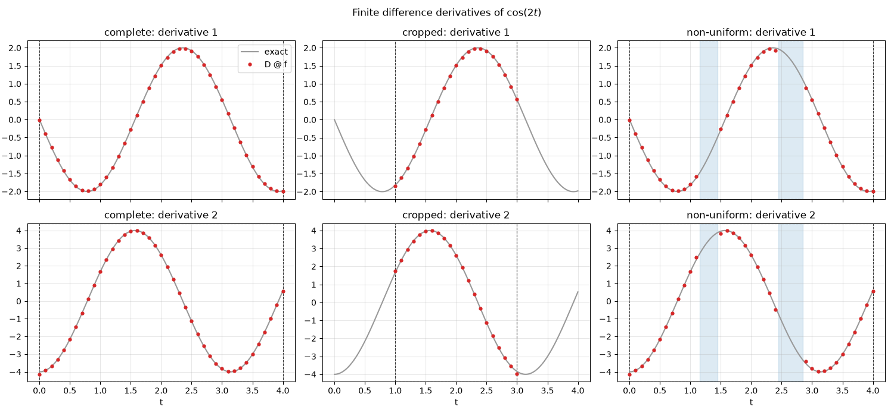
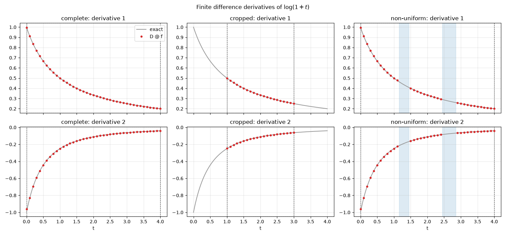
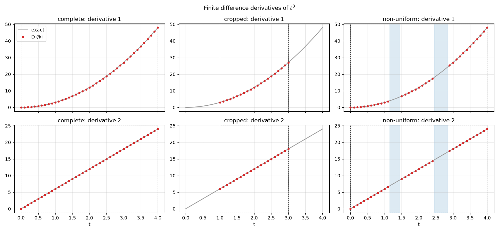
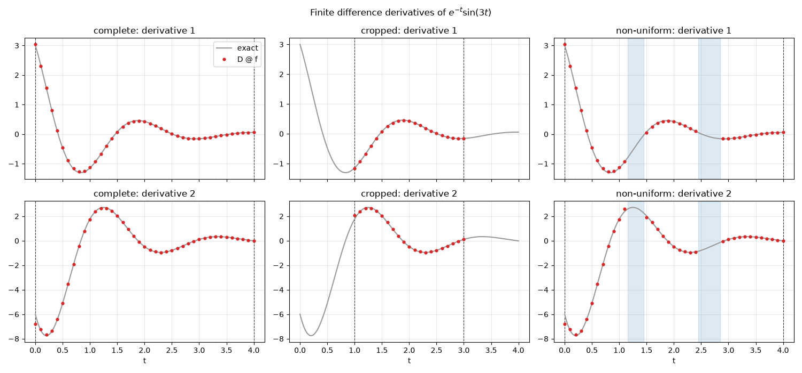
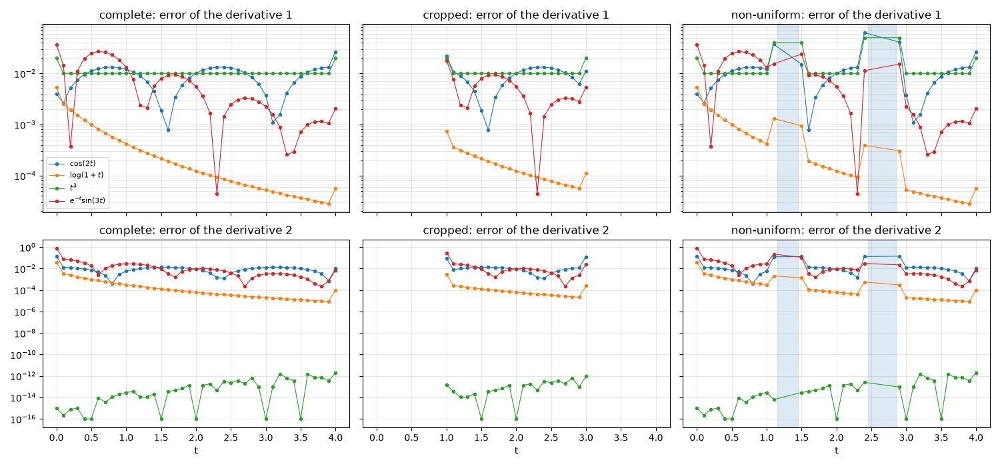

Note
Go to the end to download the full example code.
Finite difference operators on cropped and non-uniform samplings#
The temporal regularization of a SDIC analysis penalizes the derivatives of the
displacements along the frames, computed with the finite difference operator
pysdic.numeric.assemble_finite_difference_matrix(). The operator only receives the
times of the frames that have a displacement: the series can be cropped (the first and
last frames of the analysis are not given) and have larger steps (frames without
displacement in the middle are not given). For the operator, it is only a signal sampled
with non-uniform steps.
This example checks the operator on smooth functions with known derivatives:
on a complete sampling, then on a cropped one, to see the effect of the one-sided stencils at the ends;
on a sampling with two larger steps (as if 3 and 4 frames were not given), to see the effect of the non-uniform stencils around these steps.
The operator is built exactly as in the regularization: second order of accuracy,
one-sided stencils at the ends (boundary="one_sided").
The test functions#
Each function is given with its exact first and second derivatives.
import numpy
import matplotlib.pyplot as plt
from pysdic.numeric import assemble_finite_difference_matrix
functions = {
r"$\cos(2t)$": (
lambda t: numpy.cos(2 * t),
lambda t: -2 * numpy.sin(2 * t),
lambda t: -4 * numpy.cos(2 * t),
),
r"$\log(1 + t)$": (
lambda t: numpy.log(1 + t),
lambda t: 1 / (1 + t),
lambda t: -1 / (1 + t) ** 2,
),
r"$t^3$": (
lambda t: t**3,
lambda t: 3 * t**2,
lambda t: 6 * t,
),
r"$e^{-t} \sin(3t)$": (
lambda t: numpy.exp(-t) * numpy.sin(3 * t),
lambda t: numpy.exp(-t) * (3 * numpy.cos(3 * t) - numpy.sin(3 * t)),
lambda t: numpy.exp(-t) * (-8 * numpy.sin(3 * t) - 6 * numpy.cos(3 * t)),
),
}
def regularization_operator(times: numpy.ndarray, order: int):
# The operator of the temporal regularization (same options)
return assemble_finite_difference_matrix(times, order, accuracy=2, boundary="one_sided", return_indices=True)
The three samplings#
complete: \(t \in [0, 4]\) with a step \(h = 0.1\) (41 samples);
cropped: the same samples restricted to \(t \in [1, 3]\): the ends of the sampling are now inside the domain of the functions;
non-uniform: the complete sampling without the times \(\{1.2, 1.3, 1.4\}\) and \(\{2.5, 2.6, 2.7, 2.8\}\).
numpy.deleteremoves them from the array: the sampling has 34 times, with the steps 0.4 (from 1.1 to 1.5) and 0.5 (from 2.4 to 2.9) instead of 0.1. No value is given at the removed times.
step = 0.1
complete = numpy.round(numpy.arange(0.0, 4.0 + step / 2, step), 10)
cropped = complete[(complete >= 1.0 - 1e-9) & (complete <= 3.0 + 1e-9)]
removed = numpy.concatenate((numpy.arange(12, 15), numpy.arange(25, 29))) # Indices of the removed times
non_uniform = numpy.delete(complete, removed) # 34 times, with two larger steps
samplings = {"complete": complete, "cropped": cropped, "non-uniform": non_uniform}
dense = numpy.linspace(0.0, 4.0, 801) # To draw the exact derivatives
Errors of the operators#
For each sampling, the first and second derivatives are computed with D @ f and
compared with the exact ones. The errors are summarized at the samples far from the
ends and the larger steps (interior), at the two samples of each end (one-sided
stencils) and at the samples next to the larger steps (non-uniform stencils).
results = {}
for name, times in samplings.items():
near_end = numpy.zeros(times.size, dtype=bool)
near_end[:2] = near_end[-2:] = True
gaps = numpy.flatnonzero(numpy.diff(times) > 1.5 * step)
near_step = numpy.zeros(times.size, dtype=bool)
for gap in gaps:
near_step[max(gap - 1, 0) : gap + 3] = True
interior = ~near_end & ~near_step
for order in (1, 2):
D, indices = regularization_operator(times, order)
for label, (f, df, d2f) in functions.items():
estimate = D @ f(times)
exact = (df if order == 1 else d2f)(times[indices])
results[(name, order, label)] = (times[indices], estimate, exact)
print(f"\n{name}: {times.size} samples, D of shape {D.shape}")
print(f" {'function':<22} {'order':>5} {'interior':>10} {'ends':>10} {'steps':>10}")
for order in (1, 2):
for label in functions:
_, estimate, exact = results[(name, order, label)]
error = numpy.abs(estimate - exact)
parts = [error[mask].max() if numpy.any(mask) else numpy.nan for mask in (interior, near_end, near_step)]
print(f" {label:<22} {order:>5} " + " ".join(f"{value:>10.2e}" for value in parts))
complete: 41 samples, D of shape (41, 41)
function order interior ends steps
$\cos(2t)$ 1 1.33e-02 2.66e-02 nan
$\log(1 + t)$ 1 1.94e-03 5.40e-03 nan
$t^3$ 1 1.00e-02 2.00e-02 nan
$e^{-t} \sin(3t)$ 1 2.68e-02 3.65e-02 nan
$\cos(2t)$ 2 1.33e-02 1.42e-01 nan
$\log(1 + t)$ 2 2.42e-03 3.71e-02 nan
$t^3$ 2 1.46e-12 1.82e-12 nan
$e^{-t} \sin(3t)$ 2 6.47e-02 8.13e-01 nan
cropped: 21 samples, D of shape (21, 21)
function order interior ends steps
$\cos(2t)$ 1 1.33e-02 2.23e-02 nan
$\log(1 + t)$ 1 3.13e-04 7.48e-04 nan
$t^3$ 1 1.00e-02 2.00e-02 nan
$e^{-t} \sin(3t)$ 1 9.36e-03 1.80e-02 nan
$\cos(2t)$ 2 1.33e-02 1.28e-01 nan
$\log(1 + t)$ 2 2.14e-04 2.80e-03 nan
$t^3$ 2 1.09e-12 2.73e-12 nan
$e^{-t} \sin(3t)$ 2 2.47e-02 2.98e-01 nan
non-uniform: 34 samples, D of shape (34, 34)
function order interior ends steps
$\cos(2t)$ 1 1.33e-02 2.66e-02 6.26e-02
$\log(1 + t)$ 1 1.94e-03 5.40e-03 1.31e-03
$t^3$ 1 1.00e-02 2.00e-02 5.00e-02
$e^{-t} \sin(3t)$ 1 2.68e-02 3.65e-02 2.39e-02
$\cos(2t)$ 2 1.33e-02 1.42e-01 1.41e-01
$\log(1 + t)$ 2 2.42e-03 3.71e-02 2.00e-03
$t^3$ 2 1.46e-12 1.82e-12 4.55e-13
$e^{-t} \sin(3t)$ 2 6.47e-02 8.13e-01 2.21e-01
The derivatives#
For each function, the exact derivatives (lines) and the values of D @ f (markers),
for the three samplings. The larger steps are shaded.
for label, (f, df, d2f) in functions.items():
fig, axes = plt.subplots(2, 3, figsize=(15, 7), sharex=True)
for column, (name, times) in enumerate(samplings.items()):
for row, (order, exact) in enumerate(((1, df), (2, d2f))):
ax = axes[row, column]
sample_times, estimate, _ = results[(name, order, label)]
ax.plot(dense, exact(dense), color="0.6", lw=1.5, label="exact")
ax.plot(sample_times, estimate, "o", ms=3.5, color="C3", label="D @ f")
for gap in numpy.flatnonzero(numpy.diff(times) > 1.5 * step):
ax.axvspan(times[gap] + step / 2, times[gap + 1] - step / 2, color="C0", alpha=0.15)
ax.axvspan(times[0], times[-1], color="none", ec="k", ls="--", lw=0.8)
ax.set_title(f"{name}: derivative {order}")
ax.grid(alpha=0.3)
axes[0, 0].legend()
for ax in axes[1]:
ax.set_xlabel("t")
fig.suptitle(f"Finite difference derivatives of {label}")
fig.tight_layout()
plt.show()




The errors#
The absolute errors \(|D f - f^{(n)}|\) at each sample (logarithmic scale). The second order stencils give errors in \(O(h^2)\) inside the sampling; the one-sided stencils at the ends and the non-uniform stencils around the larger steps have the same order but larger constants (larger offsets).
fig, axes = plt.subplots(2, 3, figsize=(15, 7), sharex=True, sharey="row")
for column, (name, times) in enumerate(samplings.items()):
for row, order in enumerate((1, 2)):
ax = axes[row, column]
for k, label in enumerate(functions):
sample_times, estimate, exact = results[(name, order, label)]
ax.semilogy(sample_times, numpy.abs(estimate - exact) + 1e-16, "o-", ms=3, lw=0.8, color=f"C{k}", label=label)
for gap in numpy.flatnonzero(numpy.diff(times) > 1.5 * step):
ax.axvspan(times[gap] + step / 2, times[gap + 1] - step / 2, color="C0", alpha=0.15)
ax.set_title(f"{name}: error of the derivative {order}")
ax.grid(alpha=0.3, which="both")
axes[0, 0].legend(fontsize=8)
for ax in axes[1]:
ax.set_xlabel("t")
fig.tight_layout()
plt.show()

Total running time of the script: (0 minutes 2.831 seconds)